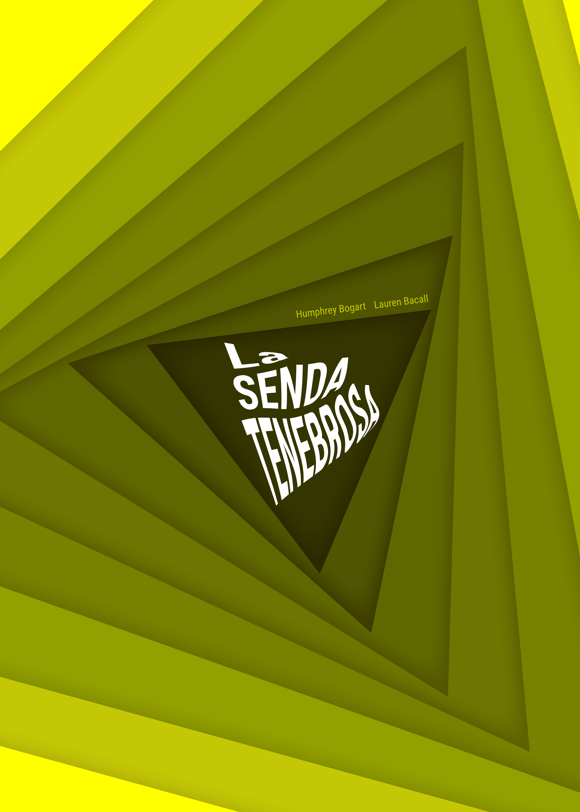

La Senda Tenebrosa
Rediseño del cartel para la película La Senda Tenebrosa, de Humphrey Bogart y Lauren Bacall. Trabajando con los conceptos sacados de la película, creamos este cartel en el que no podíamos usar el color negro ni mostrar a los protagonistas de la película.
